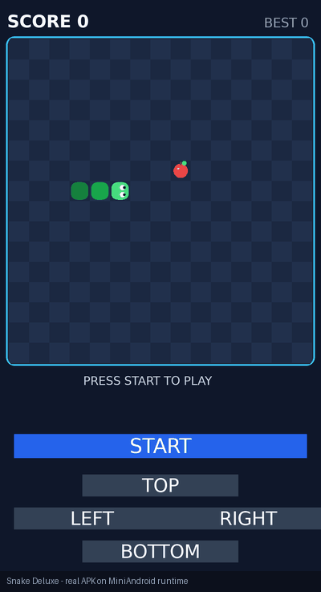
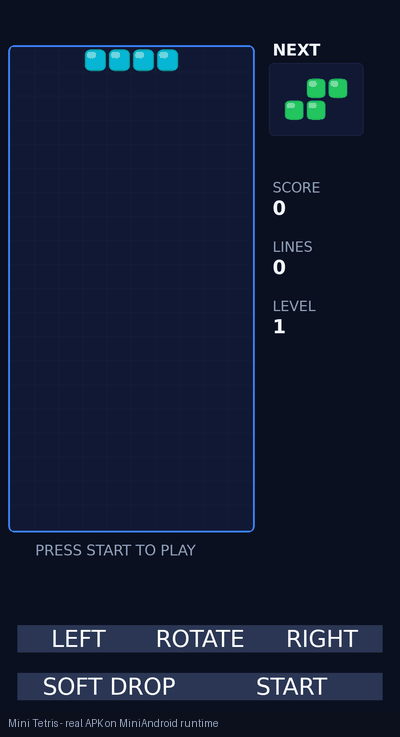
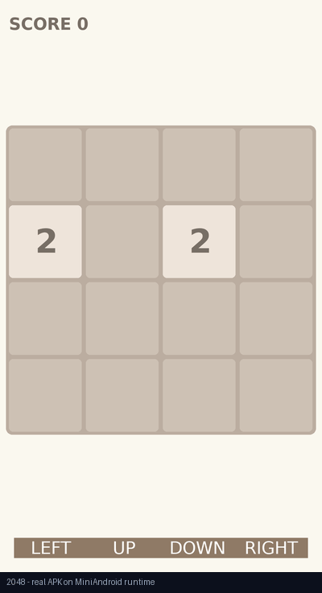

MiniAndroid — S80 Gameplay Archive
Historical gameplay demonstrations from three Android APKs executed by the MiniAndroid compatibility runtime.
01 · Snake Deluxe

9 apples collected · snake grew from 3 to 11 segments · SCORE 9 · BEST 9
| APK | snake_deluxe_v1.0_vc1.apk — S80 campaign artifact |
| Rendering | Dark grid, green segmented snake with directional head and eyes, apple with stem and leaf, score panel; rendered through Canvas.onDraw. |
| Controls | START, TOP, LEFT, RIGHT and BOTTOM controls; touch dispatched through TouchDispatcher. |
02 · Mini Tetris

7 pieces placed and locked · 7-color palette · NEXT / SCORE / LINES / LEVEL panel
| APK | tetris_v1.0_vc1.apk — S80 campaign artifact |
| Rendering | Rounded glossy pieces, playfield grid and next-piece preview. |
| Mechanics | Rotation with wall-kick, locking, line clearing and classic 100/300/500/800 scoring. |
03 · 2048

64 moves · SCORE 684 · highest tile 64
| APK | g2048_v1.0_vc1.apk — S80 campaign artifact |
| Rendering | Classic 2048 tile colors, rounded tiles and bold numeric labels. |
| Mechanics | Four-direction movement and merging, 2/4 tile generation and game-over detection. |
S80 Verification Notes
| Snake Deluxe | 9 gameplay captures | Vision-planned taps; prefix-SHA verification. |
| Mini Tetris | 7 piece locks | Greedy placer; pixel-arbitrated anchors. |
| 2048 | 64 moves · 684 points | 64/64 prefix-SHA verified. |
| Golden regression | 26/26 · 90/90 | Battery, verifier and fidelity checks recorded as byte-identical. |
| App ladder sweep | 20/20 load | Historical S80 campaign record. |
real-dalvikCanvas.onDrawTouchDispatcherno emulatorno game patches
Archive note: these are historical S80 claims and must not be interpreted as proof that the same results reproduce on the current runtime HEAD.